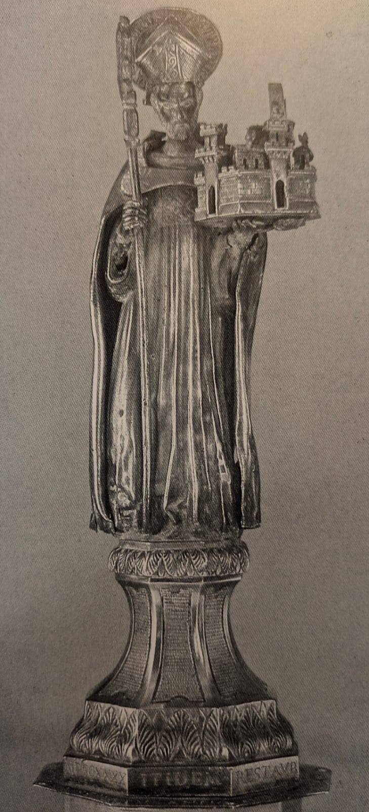
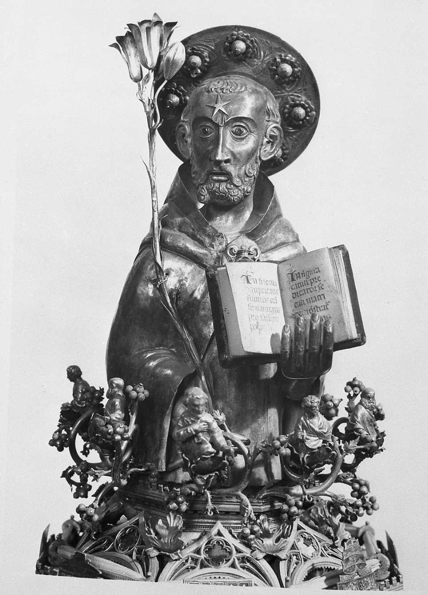

La figura di Jacopo Roseto
Un'orafo bolognese del Trecento

Jacopo Roseto, anche detto Iacopo da Bologna
Le informazioni biografiche su questo orefice erano praticamente inesistenti fino a pochi anni fa, quando è stato ipoteticamente identificato come Iacopo degli Azzi, figlio di Alberto di Prendiparte (Pini 2007, p. 66). Se questa ipotesi fosse confermata, Iacopo sarebbe il fratello di Stefano di Alberto degli Azzi, uno dei più rinomati miniatori bolognesi del Trecento. Nonostante questa identificazione, la biografia di Iacopo rimane molto scarna: sconosciute sono le date di nascita e di morte, così come la sua vita privata, eccetto un documento del 1382 relativo all'acquisto di una casa nella parrocchia di S. Giorgio in Poggiale a Bologna (Pini 2007, p. 67).
Anche la sua produzione artistica è in gran parte sconosciuta: solo due opere sono attribuite con certezza a lui, datate 1380 e 1383, mentre la cosiddetta "saliera", in realtà una teca per ostie, conservata nel Museo Civico Medievale di Bologna e fino al 1971 ritenuta sua, non è più considerata autografa (Pizzi 1971, p. 210; Trento 1987, p. 237).
Nel 1380 completò, firmandolo in più punti, il reliquiario del capo di S. Petronio, conservato nel Museo di S. Stefano. Gli elementi strutturali e le scelte iconografiche e stilistiche che caratterizzano l'opera vanno inquadrati nel contesto politico e ideologico dell'ultimo quarto del secolo, quando Bologna, dopo l'espulsione del legato pontificio Guglielmo di Noellet, (1376), restaurò il sistema comunale di governo.
Promosso dai nuovi statuti approvati nel 1378, il culto di Petronio, riconosciuto come principale patrono cittadino, divenne un elemento essenziale dell'identità politica comunale, e fu anzi assunto come il fulcro del patriottismo bolognese. Una complessa operazione culturale si sviluppò in quegli anni attraverso iniziative liturgiche e artistiche, culminando con la fondazione, nel 1390, della grande basilica petroniana. Questo progetto includeva l'incarico, attribuito intorno al 1378 a Iacopo Roseto, di realizzare un grande reliquiario per accogliere degnamente il capo del santo e per trasportarlo in processione lungo le vie cittadine, permettendo ai devoti una visione adeguata della reliquia. Questo utilizzo processionale dell'opera, decisivo per la scelta della forma a ostensorio rispetto a quella "a busto parlante", ebbe la sua piena espressione dopo la costruzione della basilica comunale, quando, come attestano i documenti notarili conservati presso l'Archivio di Stato di Bologna, la preziosa reliquia veniva traslata ogni anno, in occasione della festa patronale del 4 ottobre, dalla chiesa di S. Stefano, che la custodiva abitualmente, a quella di S. Petronio, per poi essere riaccompagnata processionalmente al mausoleo del santo, la cui struttura ottagonale continuava idealmente in quella analoga del reliquiario.
Iacopo seppe rispondere a una commissione di tale importanza: l'opera, oltre a rispondere alle finalità liturgiche per cui era stata concepita, costituì, per le soluzioni stilistiche e iconografiche adottate, un punto di riferimento per pittori, scultori e miniatori alle prese, negli anni successivi, con la divulgazione del mito petroniano. Priva di qualunque precedente iconografico, quella del reliquiario fu la prima sintesi visiva di una leggenda agiografica nota fino allora solo grazie a fonti narrative. L'originalità delle scelte stilistiche dell'orefice e la sua capacità di dialogare con i maggiori interpreti della cultura tardogotica bolognese si manifestarono con chiarezza a seguito dell'ultimo restauro (Iacopo Roseto e il suo tempo, 1992), che, grazie allo smontaggio e allo studio delle numerose parti costitutive, ha permesso di apprezzare la perizia tecnica e la creatività di Iacopo nelle diverse fasi della fusione, incisione e scultura, nella realizzazione degli smalti, ma anche nel disegno architettonico e soprattutto nella capacità di coordinare questi diversi elementi finalizzandoli all'efficacia del racconto agiografico e ai suoi contenuti patriottici. Dettata dalla struttura ottagonale della teca, modellata sul sepolcro stefaniano, la scelta narrativa si concentra su otto episodi della vita di Petronio, rappresentati in otto formelle incise e trattate a smalto traslucido sui vivacissimi toni del verde, del giallo, del blu e del violetto. Decisiva nel determinare la riuscita del programma iconografico fu la capacità di estrapolare dal racconto i momenti salienti del rapporto fra santo e città: l'elezione di Petronio a vescovo, ispirata in sogno da S. Pietro a papa Celestino; l'arrivo di Petronio a Bologna; la consacrazione delle quattro croci a tutela della città; la concessione del diploma di fondazione dello Studio da parte di Teodosio II e così via. Ma altrettanto decisiva fu l'elaborazione originale degli attributi fisionomici del santo: barbuto, accigliato, dai lineamenti enfatizzati, tratti che furono recepiti e divulgati di lì a poco da pittori, miniatori e scultori. Ancora più complessa e di grande spessore ideologico è la questione del modellino di Bologna che la statua apicale del santo tiene nella mano sinistra, espressione di un privilegiato rapporto affettivo fra la città e il suo defensor. Se la statuetta costituisse un elemento originale del manufatto (Iacopo Roseto e il suo tempo 1992, p. 62; Pini 2007, p. 69), quell'immagine applicata a Petronio sarebbe una geniale invenzione di Iacopo, dato che non si conoscono a Bologna versioni più antiche di tale iconografia, destinata a straordinaria fortuna nei secoli successivi.
La seconda opera di Iacopo, il reliquiario del capo di S. Domenico conservato presso la chiesa domenicana di Bologna, riporta anch’essa più volte la firma dell’autore, che la completò, dopo alcuni anni di lavoro, nel febbraio del 1383. Vari elementi accomunano, per ispirazione e struttura, i due reliquiari, entrambi frutto di committenze nate nel clima di forte mobilitazione patriottica che caratterizzò l’ultimo venticinquennio del Trecento bolognese. Si può dire anzi che l’intento dei promotori del reliquiario domenicano, in primo luogo gli stessi frati predicatori, fosse di contrastare il declino cui la figura patronale di Domenico sembrava condannata dal successo inarrestabile del culto petroniano. Analoghe le finalità dei due manufatti, quindi, sia pure in concorrenza fra loro, e analoghe le strutture ottagonali dei due ostensori, da cui derivò anche nel secondo la necessità di scegliere otto episodi salienti della vita del santo, da proporre alla devozione popolare come elementi identitari in ambito religioso e civile. In questo caso, però, il talento figurativo di Iacopo poteva attingere, oltre che alle fonti agiografiche, a un autorevole precedente iconografico: i bassorilievi dell’arca di Nicola Pisano, che conserva il corpo di S. Domenico, ispirarono direttamente almeno cinque delle otto scene riprodotte nelle placche smaltate.
Sul piano stilistico, il secondo reliquiario risulta rispetto al primo decisamente più elaborato, caratterizzato da una decorazione floreale più morbida e preziosa, arricchito da numerose, splendide microsculture di santi, vescovi e angeli musicanti. Comune alle due opere, invece, è il coronamento, affidato a una statua dalla problematica valutazione critica. Sulla base delle numerose tracce di doratura riscontrate sull’insieme dell’opera, l’aspetto originario della figura doveva essere omogeneo, mentre attualmente essa risulta caratterizzata da una vistosa e incoerente bicromia, in seguito all’erronea aggiunta di una statuetta lignea ottocentesca (Iacopo Roseto e il suo tempo 1992, p. 76). Alla mano di Iacopo va comunque attribuita la concezione stilistica del volto barbuto e accigliato di Domenico, se pure non si possa escludere l’intervento, nel coronamento scultoreo, di una bottega di collaboratori.
Bibliografia
- F. Lanzoni, San Petronio vescovo di Bologna nella storia e nella leggenda, Roma 1907, pp. 240-245
- F. Filippini, Il reliquiario di S. Floriano, «L’Archiginnasio», 1914, p. 187
- W. Samaja, L'arte degli orefici a Bologna nei secoli XIII e XIV, in "l'Archiginnasio", Bologna 1934, pp. 214-240
- F. Filippini, Il reliquiario del capo di S. Domenico, in "Memorie Domenicane", LIV, 1937, pp. 286-297
- F. Filippini, San Petronio vescovo di Bologna. Storia e leggenda. Bologna 1948
- C. Rossi, Orafi antichi e moderni, in "Rivista economica della Camera di Commercio, Industria e Artigianato della provincia di Bologna", Bologna 1949
- C. Bulgari, Argentieri gemmari e orafi d'Italia , volume 4, Emilia, Roma 1960
- M. Corti, Vita di San Petronio con un'appendice di testi inediti dei secoli XIII e XIV, Bologna 1962
- V. Alce, Il reliquiario del capo di S. Domenico, in "Culta Bononia", anno III, n. 1, 1971, р.12-45
- G. Pizzi, Jacopo Roseto orafo, in "Culta Bononia", anno III, n. 2, Bologna 1972, pp. 201-219
- S. Neri, Documenti araldici medievali nel reliquiario del capo di San Petronio , in "Il Carrobbio", 1, 1975, pp. 305-315
- M. Fanti, La fabbrica di San Petronio in Bologna dal XIV al XX secolo. Storia di un'istituzione, Bologna 1980
- G. Fasoli, Reliquie e reliquiari nella Chiesa di Santo Stefano a Bologna , in "Atti della Accademia delle Scienze dell'Istituto di Bologna", cl. Scienze Morali, Memorie, LXXXI, 1981-1982, p. 15
- M. Fanti, La Basilica di S. Petronio nella storia religiosa e civile della città, in "La Basilica di San Petronio in Bologna", vol. 1, Cassa di Risparmio di Bologna, Bologna 1983, pp. 9-40
- R. D'Amico, R. Grandi, Il tramonto del medioevo a Bologna. Il Cantiere di San Petronio . Bologna 1987
- G. Fasoli, Reliquie e reliquiari , in "7 colonne & 7 chiese. La vicenda ultramillenaria del Complesso di Santo Stefano", a cura di F. Bocchi, Bologna 1987, pp. 101-110
- F. Faranda, Il Reliquiario del capo di S. Petronio, in "Iacopo Roseto e il suo tempo. Il restauro del reliquiario di San Petronio", a cura di F. Faranda, Forlì 1992, pp. 57-11
- I. Kloten, La fortuna di S. Petronio: il patrono della città e la politica delle immagini , in Il luogo e il ruolo della città di Bologna, 1992, pp. 87-101
- G. Previtali, Scultura e smalto traslucido nell'oreficeria toscana del primo Trecento: una questione preliminare, in "Prospettiva", n. 79, luglio 1995, pp. 2-18
- Jacobus Rosetus: II Reliquiario del Capo di San Domenico , catalogo di mostra (Musei civici d'arte antica Bologna, 18 aprile - 28 giugno 1998), Bologna 1998
- I. Corelli Grappadelli, Orafi e argentieri a Bologna nei secoli XIII e XIV, in "Strenna Storica Bolognese", anno LII (2002), pp. 180-187
- C. Francesconi, Oreficeria per il Santo: note di iconografia, in "Petronio e Bologna", Bologna 2002, pp. 209-218
- M. Collareta, Oreficeria e tecniche orafe, in "Arti e storia nel Medioevo", vol. II, 2003, pp. 549-560
- R. Pini, Orificeria e potere a Bologna nei secoli XIV e XV, Bologna, CLUEB 2007
- B. Borghi, Come a Gerusalemme. Reliquie, oggetti sacri e devozione nella Bologna medievale, Carrocci, Bologna 2022